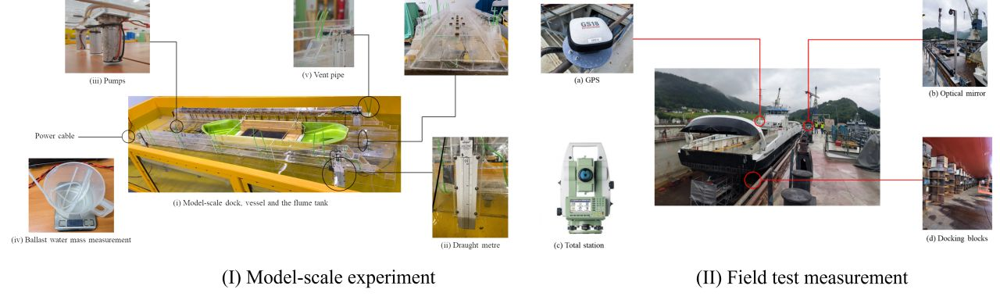

Comparative study of numerical modelling and experimental investigation for vessel-docking operations

Abstract
A comparative study between numerical modelling and experimental investigation is performed to validate the developed numerical method for simulating floating dock operations with a vessel on board. Both model-scale and full-scale experimental tests are performed on floating docks with a vessel on board, and the draughts using draught meters, floating positions and bending of the floating dock are measured. The present numerical method is proposed based on a quasi-static assumption during vessel-docking operations. A static analysis model is built to determine the static response of a floating dock under a specific ballast water distribution based on a hydrostatic force model and a Newton-Raphson method. A bending model is proposed to calculate the deflection of the floating dock along the longitudinal direction. Results of the mode-scale tests show that the draught measurements and the floating positions of the dock and vessel predicted using the present numerical method agree well with the corresponding experimental results. It proves the accuracy of the present numerical method for simulating vessel-docking operations. Moreover, a well-designed ballast plan enables successful de-ballasting operations on the model-scale dock, even in the event of one to three pump failures. The comparison of the deflection changes of the floating dock in the field test measurements further proves the accuracy of the present bending model. Therefore, the validated numerical model tested on both model-scale and full-scale docks provides a reliable foundation for creating digital twin of floating docks in shipyards.
Read the published article ↗